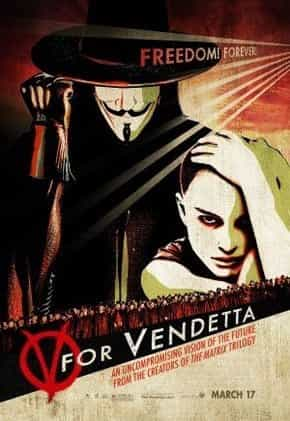
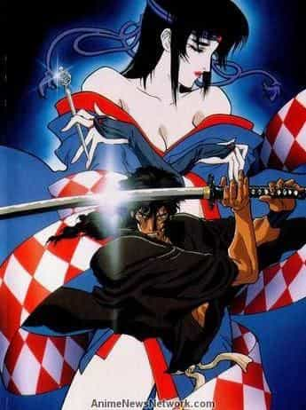
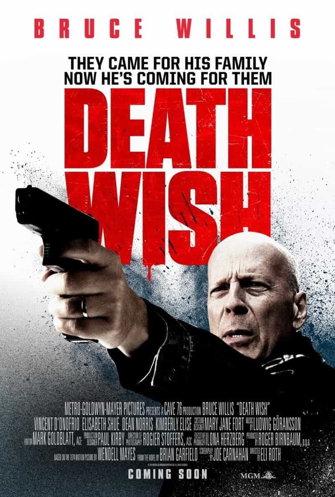
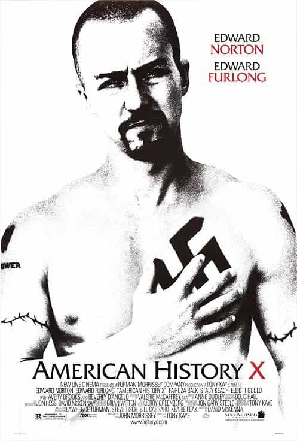

Edgar Tru is a Southern-based objectivist, natural-minded contrarian, and eleutheromania. Follow me on Gab.


The West has become a very feminine society. That is an obvious statement to any person paying attention and can see with eyes unclouded by hate. America, in particular, has allowed much art to be feminized and watered down. Films today are boring and frail with a limp wrist, and adult comedies have been reduced to obnoxious humor as if a thirteen-year-old doofus going through puberty wrote the script, such as the film Sisters, starring Tina Fey and Amy Poehler. (The most recent films I’ve seen, that aren’t ages old and are rather good, would be the drama Nocturnal Animals, the comedy The Edge of Seventeen, and the horror film A Quiet Place.)
The Hollywood of today’s era have now put out many films which perpetuate the hell of feminism, such as Seth Rogen’s sequel, Neighbors 2. Chloë Grace Moretz bitches on in the film about our sexist society and plays into the typical women-are-always-oppressed mindset. It is only one of many, and I’m sure the many to come.
So, allow us to examine four films which still hold some piss and grit to them with a dose of masculinity.

This gem quite easily portrayed a vision of the future—one of censorship, overstepping the bounds of people’s personal space by means of spying on them, ruthless propaganda, etc. This film I watched when I was in my youth. Even then it shook me despite not fully grasping the elements encapsulated within it.
One intriguing piece of propaganda in the film are the two detectives, one of whom comes to more-or-less see the side of V. They are conversing over security footage of the character of Evey laying unconscious as V stands over her. Evey assisted V from capture by macing one of the detectives. The two detectives seemed slightly baffled this supposed monster would bother helping her at all.
“Right there. What’s he thinking?”
“He’s considering leaving her… after she just saved him.”
“But he’s a terrorist. You can’t expect him to act like you or me.”
“Some part of him is human.”
They refer to V several times throughout this enticing film as a ‘terrorist.’ This plays into the expression ‘one man’s terrorist is another man’s freedom fighter.’ As in, there are no villains, only perspectives. As well, the above lines of dialogue display well the demoralizing and dehumanizing of another person. And one who was tormented by his own government whilst being labeled the bad guy by mere retaliation.
The cast is wonderful and Natalie Portman puts on a fine performance. This isn’t as much fiction as it is reality coated over with a story. It demonstrates our contemporary state and society, and where we may be heading next. There is a lot to extract from this terrific film, and it may be worth your time.

If you’re interested in a hard R-rated anime, it’d be Ninja Scroll. The plot is basic and straightforward. A ninja named Jubei Kibagama stumbles across one of the Eight Devils Of Komon, who are on a mission to take over the Tokugawa Shogunate, about to have his way with the lead female character, Kagero.
Jubei ends up being intertwined in this whole debacle and essentially forced into helping stop these devilish ninjas, along with a kooky spy, Dakuan. Some may, in our current PC culture, complain about the possible ‘misogyny’ of the film and its sexual portrayal of women, including an odd and dark scene with a devil attempting to rape Kagero and fingering her. It may not be a film that could’ve so easily been made today.
The film is laced with gore, explicit violence and sexuality, while keeping sharp pace and a very fine style of animation to which has kept this film in high regards as far as anime is concerned. It’s a raw, gritty hell-ride. A rather macho, if you will, movie.

I’m not sure I’ve come across a film with more of a pro-gun message than Death Wish. Director Eli Roth claimed it was not a pro-gun film, then adding:
…what I really try to do more than anything is show it how it really is, and leave it for the audience to decide.
Regardless of his rhetoric, the biggest theme throughout the film is that cops cannot always protect and, if a man wants to protect what’s his, he does it at the end of the barrel of a gun.
The film itself is somewhat of a letdown and doesn’t compare to other Bruce Willis film, like Die Hard, Sin City, or Hostage, but if you’re exhausted by the anti-gun mentality of today, watch this flick and feel better.

This is one of the best films I’ve ever seen in dealing with racial conflict. And I’d find it an honest one in many ways. But look out for the propaganda and how it aims to manipulate the truth by drenching it over with what’s perceived as immoral actions.
The beginning has the character of Danny, who has a standoff with a fellow black student in a high school bathroom as he defends a fellow white boy. It ends peacefully but plays a role further down the line. At the beginning, as Danny walks through his multiracial neighborhood, his voice-over says:
Venice Beach didn’t always look like this. It used to be a great neighborhood. The Boardwalk’s always been a dump, but when our dad moved us out here, Venice was a nice, quiet place to grow up. Over the years, though, it’s just gone to hell. The gangs are like a plague.
At this point, the film displays a group of adult black men getting confrontational on the basketball court. This image paints a horrifying one in terms of safety and security for European-Americans, who have already given up much of the fight for their people.
This film may have never been intended to be a red-pilled film, but to anyone who is aware of the conundrums involved in race and racial diversity, then this film is eye-opening. As I see it, the film aims to give way to a nasty violent image associated with strong arguments on things like illegal immigration, black crime stats, race riots, the changing shift in culture due to race, and so on. The attempt could be to demonize the truth by coating it over with behavior many are repulsed by.
This film holds much truth about our multicultural, multiracial society. It is a strong film and holds up nicely over the years. Very strongly recommended.
Hollywood is drowning in failure and it appears many of our self-righteous overlords are too ignorant to perhaps grasp how unpopular they are outside of their little holier-than-thou bubble. And, though it is seemingly rarer and rarer, some decent flicks are still produced and give way to some decent entertainment and escapism. The above mentioned are certainly worth a take.
Read Next: 8 Films With Masculine Virtue